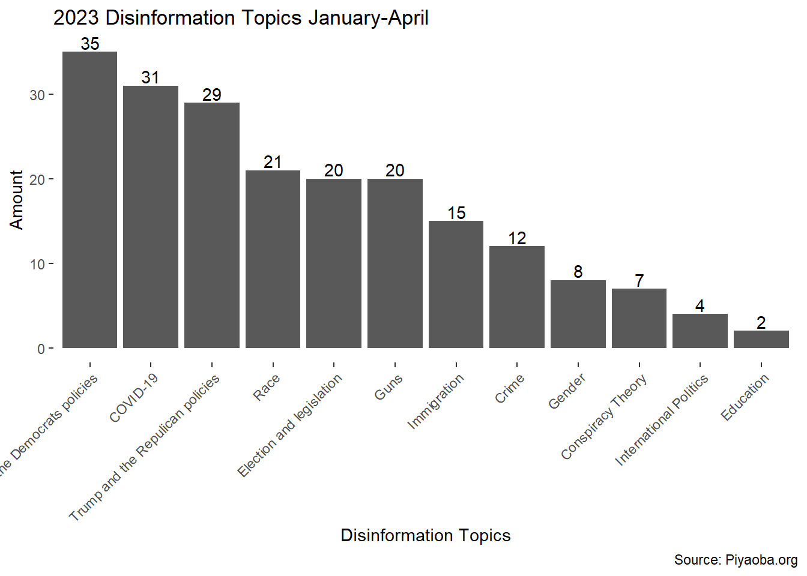
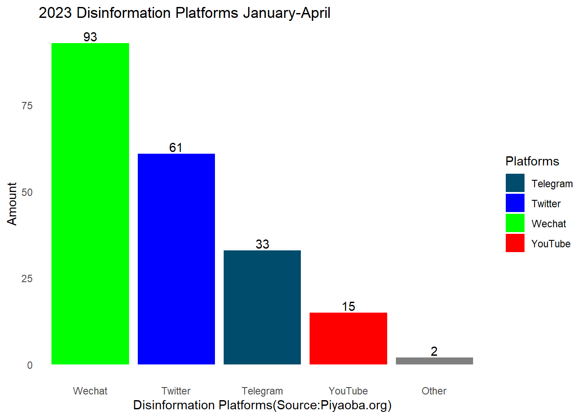
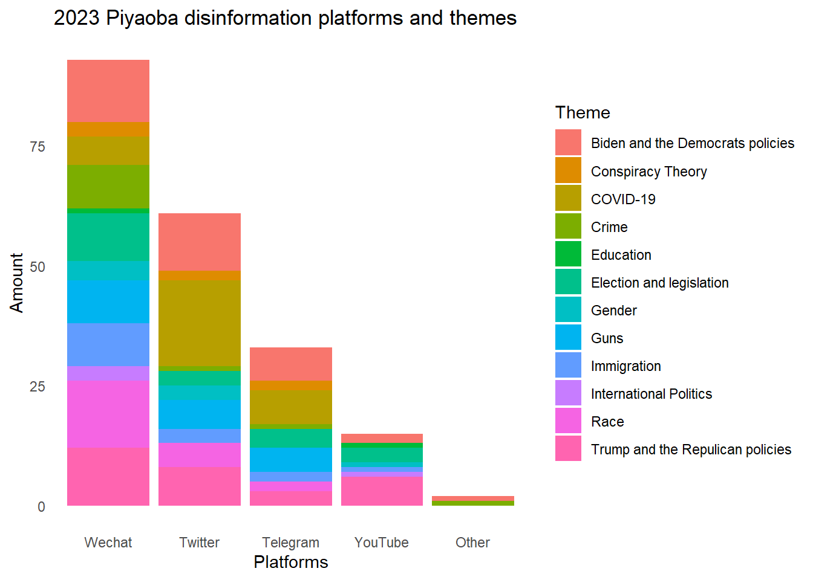
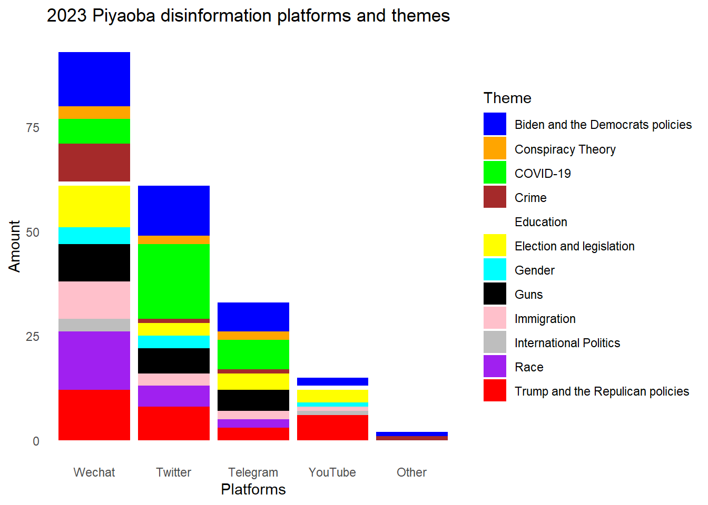
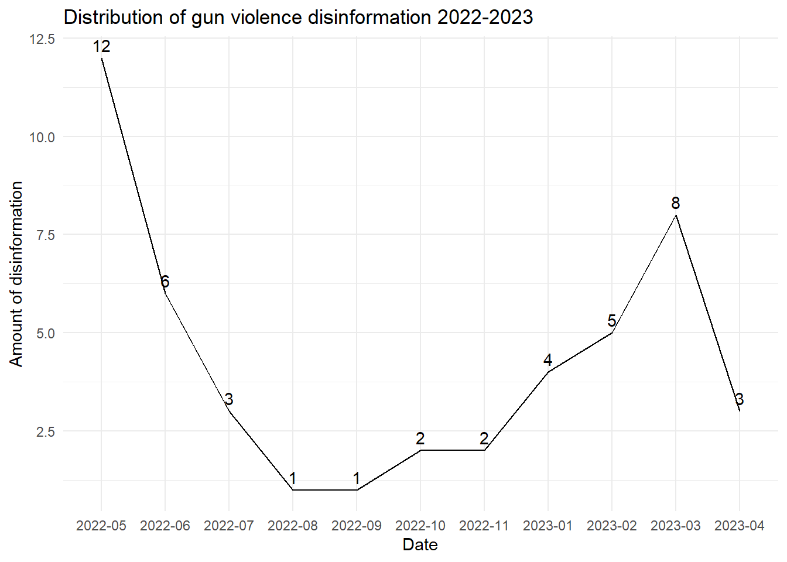
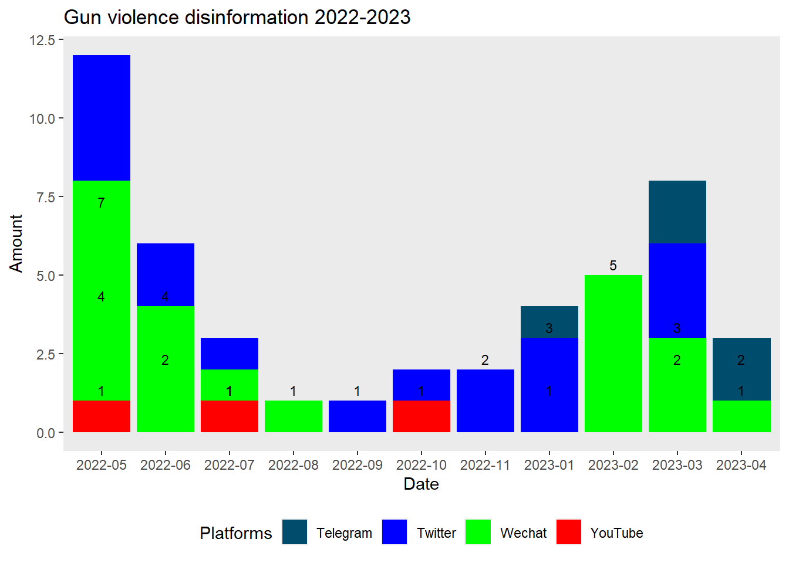
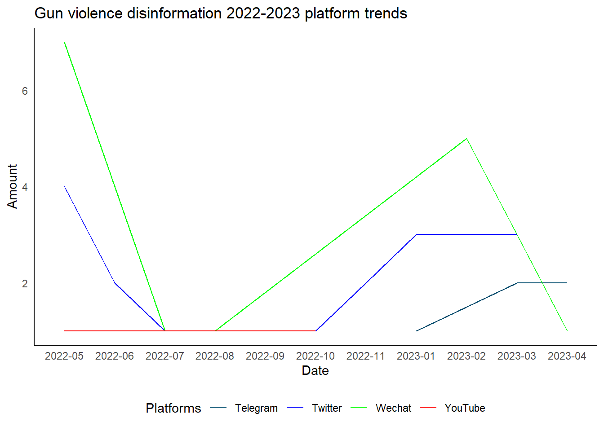

library(tidyverse)
knitr::opts_chunk$set(echo = TRUE, warning=FALSE, message=FALSE)Final Project: Chinese language disinformation about guns
final_Project_assignment
final_project_data_description
Data analysis and visualization
Part 1. Introduction
My project focuses on disinformation in the Chinese-American community. I aim to assess the current(2023) extent of this misinformation and identify the primary digital platforms or social media where it is prevalent. Specifically, I want to investigate the presence of disinformation regarding gun violence.
Disinformation often reflects people’s fears and confusion. Currently, we are facing not only the COVID-19 pandemic but also a gun violence epidemic that disproportionately affects immigrant communities. Moreover, there has been a rise in anti-Asian sentiment, exemplified by terms like ‘China virus,’ which has led to an increase in anti-Asian incidents. Consequently, gun violence and community safety have become major concerns for many Chinese-American communities, especially those residing in larger cities like San Francisco.
The data for my project is sourced from Piyaoba.org, the first Chinese-language fact-checking website in the U.S., which I manage at the non-profit organization Chinese for Affirmative Action (CAA).
The Piyaoba dataset aims to systematically monitor and document disinformation within the Chinese-American community. It includes manually collected instances of disinformation from various digital spaces and platforms spanning from 2022 to 2023.
To ensure impartiality and avoid selection bias, we carefully verify that all media and social media documented in the Piyaoba dataset are indeed misinformation or disinformation. Initially, my team identifies and documents the most frequently spreading accounts and users known for disseminating disinformation, as well as the primary keywords associated with misinformation. We then conduct ongoing manual monitoring of these accounts and keywords across different platforms. Whenever a new piece of information is identified from these sources, we perform a manual analysis to assess its accuracy before documenting it in the dataset.
My research aims to answer the following questions:
1.What is the overall scale of disinformation in the Chinese-American community in 2023, including the topics and platforms being utilized?
2.What is the extent of disinformation related to gun violence in 2022 and 2023? Which platforms are commonly used for its dissemination? Does the prevalence of gun violence-related disinformation continue to increase on major social media platforms throughout 2022 and 2023?
Part 2. Describe the data set(s)
1.read the dataset.
getwd()[1] "C:/Users/scaru/Documents/Github/JXN_601_Spring_2023/posts/JinxiaNiu_FinalProjectData"setwd('C:/Users/scaru/Documents/Github/JXN_601_Spring_2023/posts')
install.packages("readxl")Error in contrib.url(repos, "source"): trying to use CRAN without setting a mirrorlibrary(readxl)
PYB2023 <- read_xlsx ("_data/PYB2023.xlsx") - present the descriptive information of the dataset(s)
dim(PYB2023)[1] 204 8[1] 204 8
::: {.cell}
```{.r .cell-code}
colnames(PYB2023)
```
::: {.cell-output .cell-output-stdout}
```
[1] "Date" "Theme" "Platforms" "Views_K" "Source_EN" "Username"
[7] "Title_CH" "Link"
```
:::
:::[1] “Date” “Theme_EN” “Platforms” “Views(K)” “Engagements” “Source_EN”
[7] “Username” “Title_CH” “Link”
The Piyaoba.org 2023 Chinese-language disinformation dataset comprises 204 observations and 8 columns. It consists of disinformation pieces collected from January 2023 to April 2023 in the Chinese-language digital space.
The “Date” column indicates the date when the disinformation was monitored. The “Theme” column contains the theme or topic of the disinformation. The “Platforms” column shows the social media platforms on which it circulated, including platforms like WeChat, Twitter, YouTube, and Telegram. The “Views_K” column indicates the number of views it received, calculated in thousands.
The “Source” column indicates whether the original piece of disinformation came from English media or social media. The “Username” column includes the usernames of the users on these social media platforms who generated and spread the disinformation.
The “Title” and “Link” columns contain the original titles of the disinformation and their corresponding links.
- conduct summary statistics of the dataset(s)
First, I will look at summary statistics for disinformation by theme, what kind of disinformation are popular in the Chinese-American community?
library(tidyverse)
PYB2023$"Views_K"<- as.numeric(PYB2023$"Views_K")
mean(PYB2023$"Views_K",na.rm = TRUE)[1] 21.22629 Disinforplatforms <- PYB2023 %>%
group_by(Platforms) %>%
summarize(avg_views = mean(Views_K, na.rm = TRUE))
head(arrange(Disinforplatforms, desc(avg_views)))Next, I will look at summary statistics for disinformation platforms, which are the platforms are spreading them?
Disinfortopics <- PYB2023 %>%
group_by(Theme) %>%
summarize(avg_views = mean(Views_K, na.rm = TRUE))
head(arrange(Disinfortopics, desc(avg_views)))3. The Tentative Plan for Visualization
1.I plan to utilize barplots and stacked barplots to address the scale of disinformation in the Chinese-American community in 2023, focusing on the topics and platforms involved. Barplots are a straightforward and clear way to present the highest-ranked disinformation topics and platforms.
2.I intend to employ time series analysis, line plots, and grouped and stacked barplots to examine the scale of disinformation regarding gun violence in the years 2022-2023. Since disinformation about gun violence is a subset of broader disinformation, grouped and stacked barplots can effectively demonstrate the magnitude of this particular misinformation within the broader context. These visualization techniques are designed to illustrate the “part of the whole” relationship.
Note: In order to obtain the current PYB2023 data, I have already performed some data wrangling tasks, including converting the date format, translating, renaming, and reordering the relevant variables. However, the current data is still not in tidy format. To address my research questions, I still need to merge or combine duplicated observations, particularly for the “Theme” variable. Additionally, I need to separate the “Engagements” variable and pivot the data longer.
library(tidyverse)
library(ggplot2)
#1.1 Use Barplot the scale of 2023 Chinese-language disinformation by topics
ggplot(PYB2023, aes(x = fct_infreq(Theme))) +
geom_bar(fill = "#0000FF") +
geom_bar(position = "dodge") +
labs(title = "2023 Disinformation Topics January-April", x = "Disinformation Topics", y = "Amount", caption = "Source: Piyaoba.org") +
geom_text(aes(label = ..count..), stat = "count", position = position_dodge(0.9), vjust = -0.2) +
theme(axis.text.x = element_text(angle = 45, hjust = 1),
panel.grid = element_blank(),
panel.background = element_blank())
#1.2Barplot the scale of 2023 disinformation by platforms
#Custom platform colors
platform_colors <- c("YouTube" = "red", "Wechat" = "green", "Twitter" = "blue", "Telegram" = "#004c6d")
ggplot(PYB2023, aes(x = fct_infreq(Platforms), fill = Platforms)) +
geom_bar() +
labs(title = "2023 Disinformation Platforms January-April", x = "Disinformation Platforms(Source:Piyaoba.org)", y = "Amount") +
geom_text(aes(label = ..count..), stat = "count", position = position_dodge(0.9), vjust = -0.2) +
scale_fill_manual(values = platform_colors) +
theme_minimal()+theme(panel.grid = element_blank())
# 1.3 Stacked Barplot the scale of 2023 disinformation by platforms, filled with themes
df <- PYB2023 %>%
group_by(Platforms, Theme) %>%
summarize(Count = n())
ggplot(df, aes(x = fct_infreq(Platforms), y = Count, fill = Theme)) +geom_bar(stat = "identity") +
labs(x = "Platforms", y = "Amount", title = "2023 Piyaoba disinformation platforms and themes") +
theme_minimal() +
theme(panel.grid = element_blank())
# 1.4.Because of the default colors are not clear enough to distinguish, for example, the color of "Guns" and "Immigration" themes are very similar, I would like to define the custom colors for each theme.
custom_colors <- c(`Biden and the Democrats policies` = "blue", `Conspiracy Theory` = "orange", `COVID-19` = "green", `Crime` = "brown",`Education` = "white",`Election and legislation` = "yellow", `Gender` = "cyan", `Guns` = "black",`Immigration` = "pink",`International Politics` = "gray",`Race` = "purple",
`Trump and the Repulican policies` = "red")
# Create the plot with the custom colors
ggplot(df, aes(x = fct_infreq(Platforms), y = Count, fill = Theme)) +
geom_bar(stat = "identity") +
labs(x = "Platforms", y = "Amount", title = "2023 Piyaoba disinformation platforms and themes") +
theme_minimal() +
theme(panel.grid = element_blank())+
scale_fill_manual(values = custom_colors)
2.I will employ time series analysis, line plots, and grouped and stacked barplots to address the scale of disinformation concerning gun violence in the years 2022-2023. Additionally, I aim to determine whether the volume of disinformation related to gun violence is increasing on major social media platforms throughout the specified period. To accomplish this, I will first need to perform data cleanup for the 2022 disinformation data. Then, I will filter out disinformation specifically related to gun violence for the years 2022 and 2023. Finally, I will merge the two datasets to facilitate further analysis.
PYB2022 <- read_xlsx ("_data/PYB2022.xlsx")
``{r}
#Filter all columns Theme_EN contains "Crime","Guns” in 2022 disinformation dataset
colnames(PYB2022)
PYB2022$Theme_EN <- str_replace_all(PYB2022$Theme_EN, c("guns" = "Guns", "crime" = "Crime"))
head(PYB2022)
library(dplyr)
df<- PYB2022 %>%
filter(grepl('Guns|Crime',Theme_EN ))
install.packages("writexl")
library(writexl)
write_xlsx (df,"_data/Guns2022.xlsx")
df1 <- read_xlsx("_data/Guns2022.xlsx")
#Filter all columns Theme_EN contains "Crime","Guns” in 2023 disinformation dataset
df2<- PYB2023 %>%
filter(grepl('Guns|Crime',Theme))
View(df2)
write_xlsx (df2,"_data/Guns2023.xlsx")
# Merge datasets Guns 2022 and Guns2023
install.packages("readxl")
library(readxl)
Guns2022 <- read_xlsx ("_data/Guns2022.xlsx")
Guns2023 <- read_xlsx ("_data/Guns2023.xlsx")
head(Guns2022)
head(Guns2023)
Guns2023 <- Guns2023%>%
select("Date","Title_CH","Link","Views_K","Theme","Platforms","Username")
head(Guns2023)
colnames(Guns2022)[6] ="Theme"
colnames(Guns2023)[2] ="Title"
Guns2022$Theme_CH <- NULL
Guns_2223 <- rbind(Guns2022, Guns2023)
# Clean up some data that are in Chinese
Guns_2223$Platforms <- str_replace_all(Guns_2223$Platforms, c("Wechat群传播广泛，议论很多" = "Wechat", "旧金山华人资讯网" = "Wechat"))
#try to order the date column in descending order
Guns_2223[order(Guns_2223$Date, decreasing=TRUE,)]
#Save the combined 2022-2023 datasets about gun violence
write_xlsx (Guns_2223,"_data/Guns_2223.xlsx")
#Filter out the disinformation about gun violence in the "crime" theme
Guns_2223 <- read_xlsx ("_data/Guns_2223.xlsx")
library(dplyr)
df <- Guns_2223 %>%
filter(grepl('Guns',Theme))
#sort the dataset by "Date" in descending order
df <- df[order(df$Date, decreasing = TRUE), ]
view(df)
#Save the new dataset only about gun violence disinformation in 2022-2023
install.packages("writexl")
library(writexl)
write_xlsx (df,"_data/Guns.xlsx")Error: attempt to use zero-length variable name2.1 use Time Series and line plot to show the the scale if gun-violence disinformation from 2022-2023 and answer the question of if these disinformation increase over time from 2022-2023.
getwd()[1] "C:/Users/scaru/Documents/Github/JXN_601_Spring_2023/posts/JinxiaNiu_FinalProjectData"setwd('C:/Users/scaru/Documents/Github/JXN_601_Spring_2023/posts')
install.packages("readxl")
library(readxl)
Guns <- read_xlsx ("_data/Guns.xlsx")
install.packages("lubridate")
library(lubridate)
library(tidyverse)
library(ggplot2)
# Convert Date column to proper date format
Guns$Date <- as.Date(Guns$Date)
# Extract year and month from Date
Guns$YearMonth <- format(Guns$Date, "%Y-%m")
# Count the number of rows by YearMonth
count_by_ym <- aggregate(Date ~ YearMonth, data = Guns, FUN = length)
# Plotting the line plot
ggplot(count_by_ym, aes(x = YearMonth, y = Date, group = 1)) +
geom_line() +geom_text(aes(label = Date), vjust = -0.5, hjust = 0.5, color = "black") +
labs(x = "Date", y = "Amount of disinformation", title = "Distribution of gun violence disinformation 2022-2023") +
theme_minimal()
labs(x = "Year-Month", y = "Count", title = "Count of Rows by Year-Month") +
theme_minimal()+theme(plot.background = element_rect(fill = "white"),panel.grid.major = element_blank(), panel.grid.minor = element_blank())NULL2.2. Use stackbar plot to answer the questions of what’s the scale of gun violence disinformation by platforms in each month from 2022-2023.
count_by_year_month_platform <- Guns %>%
group_by(YearMonth, Platforms) %>%
summarise(row_count = n()) %>%
ungroup()
# Define colors for each platform
platform_colors <- c("YouTube" = "red", "Wechat" = "green", "Twitter" = "blue", "Telegram" = "#004c6d")
# Plotting the stacked barplot with specified colors
ggplot(count_by_year_month_platform, aes(x = YearMonth, y = row_count, fill = Platforms)) +
geom_bar(stat = "identity") +
geom_text(aes(label = row_count), vjust = -0.5, color = "black", size = 3) + # Add total count numbers
labs(x = "Date", y = "Amount", title = "Gun violence disinformation 2022-2023") +
scale_fill_manual(values = platform_colors) +
theme(legend.position = "bottom", plot.background = element_rect(fill = "white"),panel.grid.major = element_blank(), panel.grid.minor = element_blank())
2.3.Plotting the line plot with different lines for each platform to have a even clearer idea of what’s the trends of gun violence disinformation on different platforms
ggplot(count_by_year_month_platform, aes(x = YearMonth, y = row_count, color = Platforms,group = Platforms)) +
geom_line() +
labs(x = "Date", y = "Amount", title = "Gun violence disinformation 2022-2023 platform trends") +
scale_color_manual(values = platform_colors) +
theme_minimal() +
theme(legend.position = "bottom")+theme(panel.grid = element_blank())+
theme(axis.line = element_line(color = "black") ) # Set color of axes lines to black